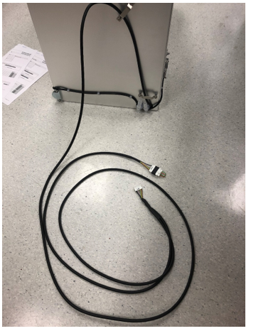
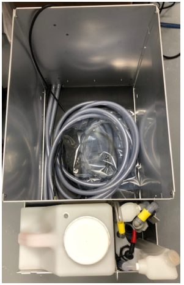
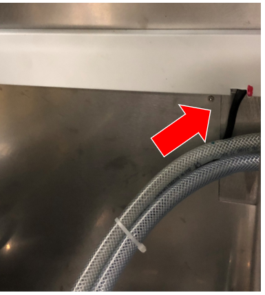
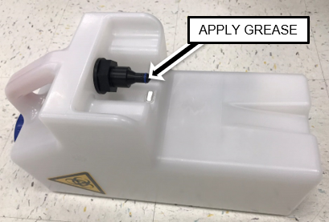

LWOTF, New Complete Waste Drawer Installation
Parts and Materials Required
 CONTINUOUS ACCESS KIT W/ FULL ASSEMBLED WASTE DRAWER
CONTINUOUS ACCESS KIT W/ FULL ASSEMBLED WASTE DRAWER


- Vacuum Tubing (if System has been in Service for 1yr or more)
Procedure
- Remove and prep the Waste Drawer Cover (Steps 2 - 5).
If Waste Drawer Cover has already been prepared, skip to Step 6. - Slide the Waste Drawer open as far as possible.
- Safely remove and discard the solid waste.
- Remove the Waste Bottle, discard the liquid waste and set the bottle aside.
- Remove the Waste Drawer Cover and set aside
- Remove the Waste Drawer from each of the drawer rails and move in front of the UFD or out of the way.
- Label the tubing L and R (as shown below) and cut the vacuum tubing just above the elbow fitting.
- Disconnect the waste bag and bottle sensors from the Cooling Module PCB.
Pull cables from behind Vacuum and Cooling Module. - Remove the horizontal Cable Chase Cover.
- Notch the bottom of the Chase approximately 1” to the left of the existing cable clamps.
- Connect the vacuum tubing to the appropriate fitting (L- vacuum pump / R – vacuum manifold).
- Route the new drawer's CAN cable
- Replace the Cable Chase Cover.

- Route and Connect the CAN cable to the COP.

Note— If upgrading a Panther Fusion, the Waste Drawer CAN cable will plug into Port 11 on the COP board and the Fusion Sidecar CAN cable will plug into Port 12. If a jumper is present, it may be discarded.
Note— Systems 01936 and below will require relocating the magnetic latches when the waste drawer is installed - Install the Waste Drawer onto its rails and re-install waste drawer cover
- Apply High Vacuum Grease to the O-rings on ALL of the New Removable Bottles.

- Install one of the Removable Bottles in the Waste Drawer.
- Close the Waste Drawer and verify that it closes with minimal force.
Adjust tubing and cable alignment (at the rear of the drawer) as needed.


|
|
Note— Instrument set-up can be run at this point. |
Continue to Universal Fluids on the Fly Module Installation
 button at the top of the page to send feedback, comments, or change requests.
button at the top of the page to send feedback, comments, or change requests.